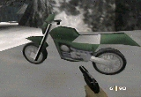
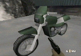
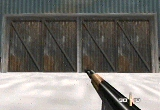
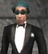

|
.
| Goldeneye
Version Beta : Runway |
| Pour
commencer, la Moto. Bond devait la conduire et poursuivre l'Avion
comme dans le Film, mais, Rare l'a enlevé. En principe, si
on raisonne comme dans le Film, un Garde devait sortir en Moto des
Grandes Portes Coulissantes. Au lieu de ça, lorsque Rare testait
le Tank dans Streets, ils on voulu le mettre dans un autre Niveau.
Runway fut alors choisi, puisque la Moto avait été virée.
De plus, le Tank est beaucoup mieux avec ses Obus pour exploser les
Mitrailleuses non ? Il semble évident que le Personnage de
Battle "Biker" devait être un des Gardes conduisant
la Moto... Pour faire apparaitre la Moto, c'est par ici
! |



